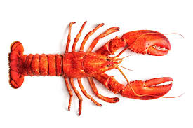
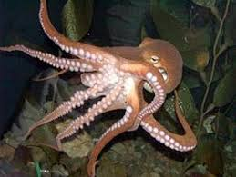
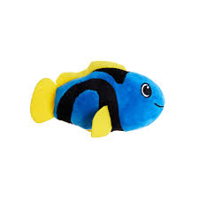
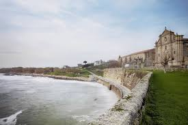

A gastronomía na Guarda é moi importante, coma en toda Galicia. Se chegas a Guarda poderás catar animales mariños de todo tipo:Mariscos, moluscos, peixes, etc

OIA
En Oia podes ver a costa que é preciosa. É case o mais bonito que ten Oia.

Tamén temos o monasterio de Oia, un monasterio precioso para visitar, aqui una imaxe: